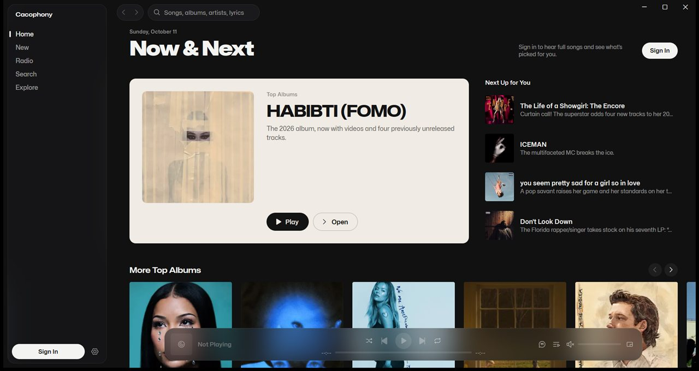
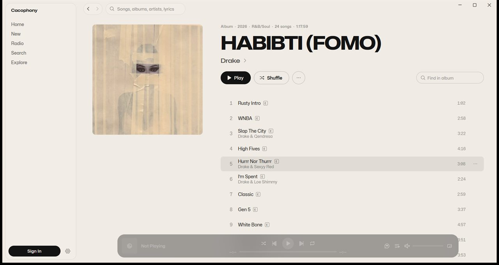
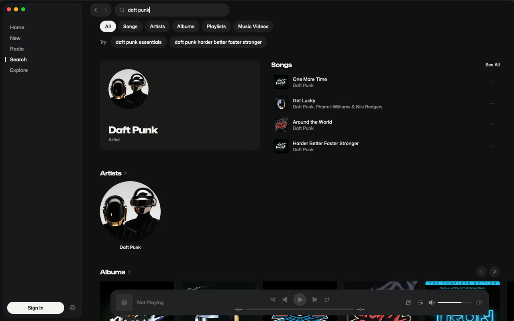

Cacophony
An Apple Music app for Windows and Mac that doesn't make you wait.
Cacophony plays Apple Music on Windows 10 and 11, and on Macs with macOS 14 or newer. The interface is native, written in Rust instead of being a website stuffed into a window, so it opens fast and scrolling stays smooth. Sign in with your Apple Music account and your library, playlists, radio and search are all there.
Get it on itch.io $5 once, no subscription
What's in it
- Synced lyrics that move along with the song, and you can read them full screen. When Apple has none for a track, Cacophony checks LRCLIB.
- A 10-band equalizer with Apple's presets.
- A mini player you can park in a corner while you work.
- On Windows, media keys and the system media controls work, with cover art and a seek bar.
- Last.fm and ListenBrainz scrobbling, plus a Discord status. All off until you connect them.
- 52 languages, the same ones Apple Music comes in.

What you need
- Windows 10 or 11, 64-bit, or macOS 14 Sonoma or newer, on Apple silicon or Intel.
- An Apple Music subscription for full songs. Without one you get 30-second previews.
- On Windows, Microsoft Edge WebView2, which does the actual playing. Windows 11 has it already, and on Windows 10 the app tells you if it's missing.

Questions
Do I need an Apple Music subscription?
For full songs, yes. Without one, Apple Music only plays 30-second previews. Browsing and search still work.
Does it play Lossless or Dolby Atmos?
No. Songs play at 256 kbps AAC, the same quality as Apple's web player, and there are no offline downloads.
Do I have to buy it twice for Windows and Mac?
No. One purchase on itch.io gets you both downloads.
Is the Mac version the same?
Yes, apart from the media keys and system media controls, which are Windows-only for now. It's newer, though, and I've tested it less than the Windows one, so tell me if something's off. The Mac download is signed and notarized by Apple, so it opens like any other app.
Windows warned me when I opened it. Why?
The app isn't code-signed yet, so Windows SmartScreen flags it the first time, like most new apps from small developers. Click "More info", then "Run anyway".
Is it made by Apple?
No. Cacophony is an independent app. It plays music through Apple's own MusicKit, and you sign in on Apple's own page, so your password only goes to Apple.
What does it collect?
Nothing for me. There's no account, no analytics and no ads. The privacy page lists everything the app talks to.
Something's broken. Where do I report it?
In the comments on Cacophony's itch.io page. I read them.